Interactive Résumé
The Journey of a
Computational Biologist.
From pure mathematics to cancer genomics, multi-omics integration, and deployed clinical AI — each stop on the left rail is a station in the story. Scroll, and the train moves with you.
2018 — 2021 · The Foundation
B.Sc. Mathematics
St. Xavier's College, Mumbai · CGPA 9.31 / 10
A rigorous major in Mathematics with a minor in Physics — Linear Algebra, Vector Analysis, Optimization, and Topology. This is the analytical bedrock behind every model I build: the reason I think about biology in terms of geometry, structure, and completion.
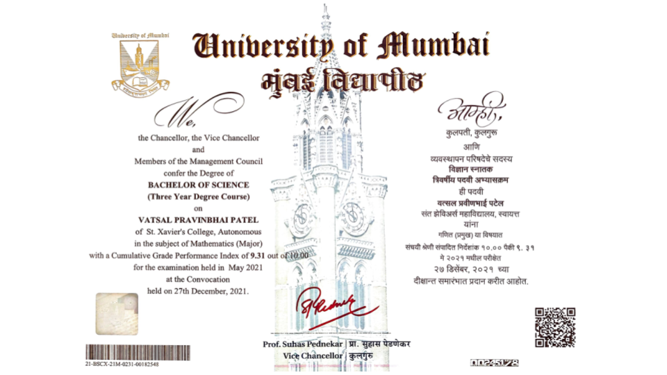
2020 · Ahead of the Curve
Building the ML Foundation — as early as 2020
While still an undergraduate, I completed advanced specializations in deep learning and the mathematics behind it — years before it became mainstream. Verified, multi-course credentials.
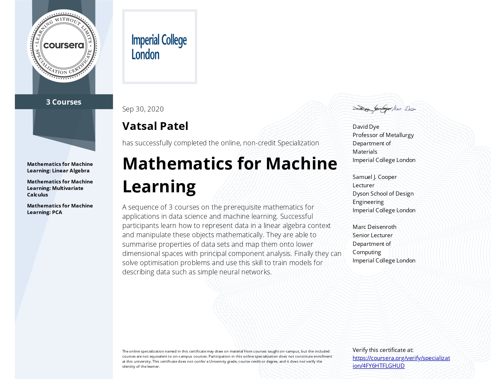
TensorFlow Developer
DeepLearning.AI — building, training & deploying neural networks.
ML on Google Cloud
Production ML pipelines & scalable cloud training.
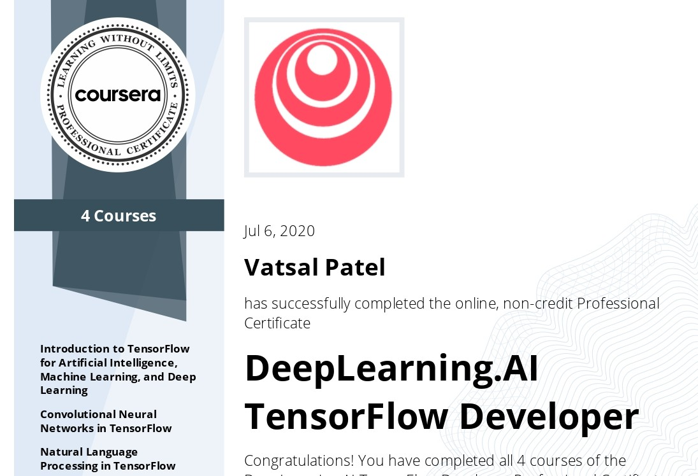
Mathematics for ML
Imperial College London — Linear Algebra, Multivariate Calculus, PCA.
2021 · First Author
First Research Papers
My first independent research — bridging optimization theory and cancer biology while still an undergraduate. Including a first-author deep-learning study on mapping single cells to cancer types.
Research Paper on Gradient Descent
An analytical study of gradient-based optimization — the mathematical engine behind modern deep learning.
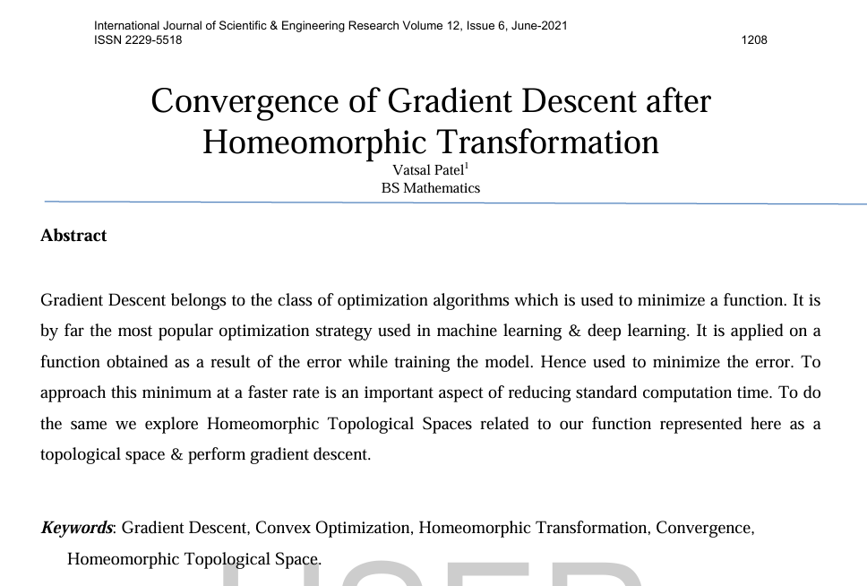
Cancer Cell Mapping — Single-cell RNA-seq
A deep-learning model to automatically map cancer cells to cancer cell lines and cancer types from single-cell RNA-seq pan-cancer data.
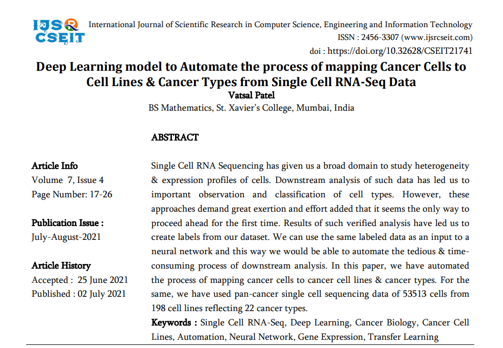
Sep 2021 — Mar 2025 · 3.5 Years
Bioinformatics Research Engineer
BRIC — National Institute of Biomedical Genomics (NIBMG), Kalyani · National Supercomputing Mission
- National Supercomputing Mission (NSM): large-scale genomics, transcriptome mapping, and drug-discovery pipelines on HPC clusters.
- GPU pipeline engineering: built and deployed scalable, high-performance GPU pipelines for tissue feature extraction from open-source foundation models.
- Histopathology vision: deep convolutional autoencoders & Multiple Instance Learning on whole-slide images.
- Published (contributing author): ensemble ML evaluation of in-silico pathogenicity predictors for cancer driver mutations — BioData Mining (IF 6.1).
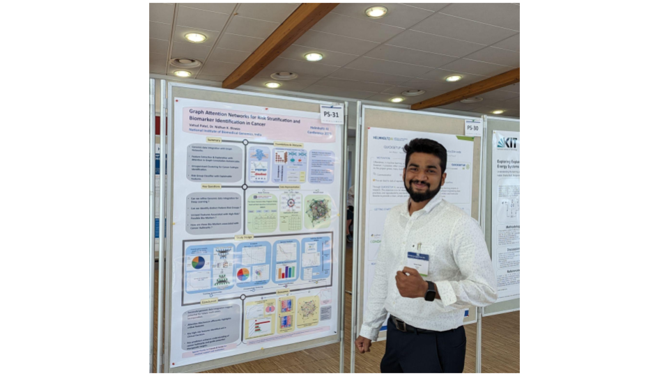
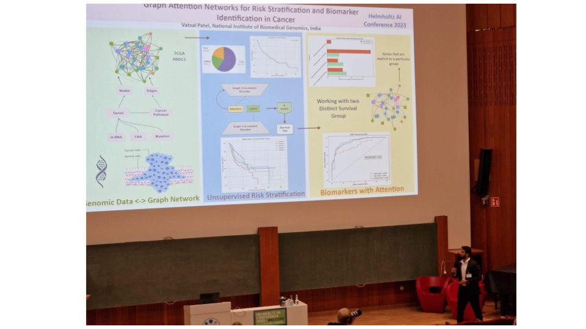
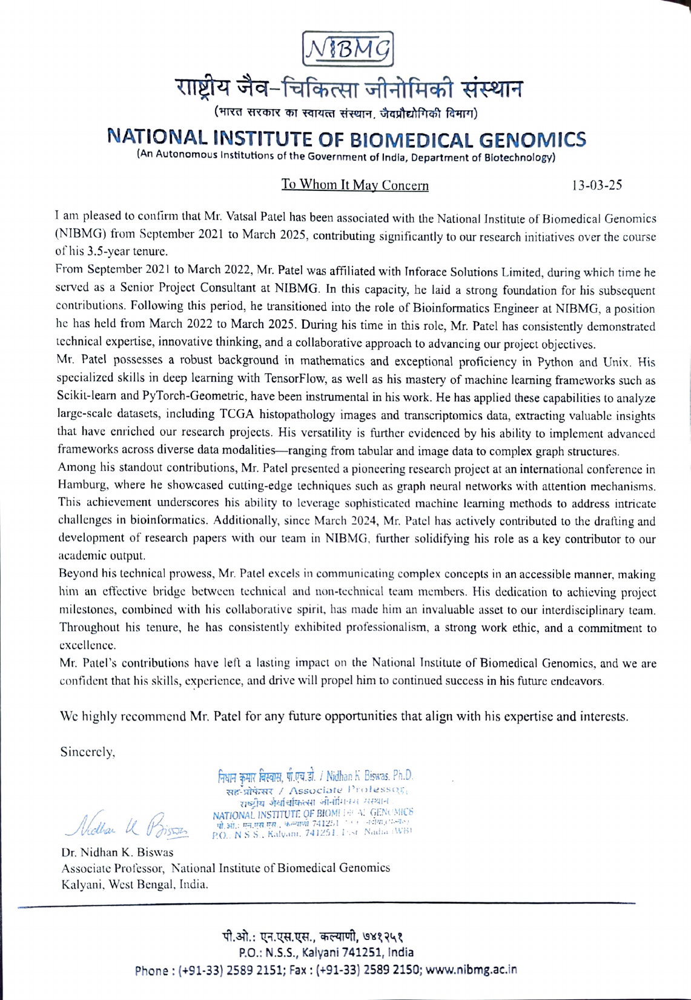
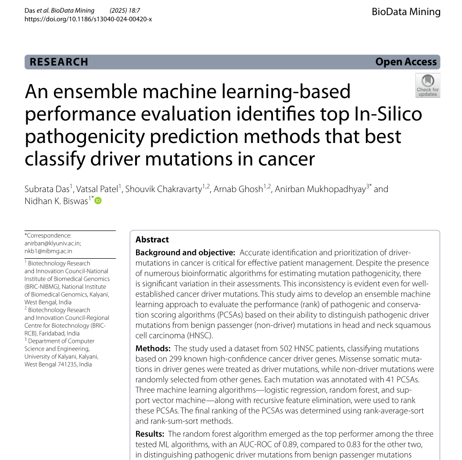
Mar 2023 — Feb 2025 · Berlin, Germany
M.Sc. Artificial Intelligence
IU International University of Applied Sciences · Grade 1.8 (German scale)
A formal deep-learning education layered on top of years of applied research — advanced ML, deep learning, and biomedical applications. Pursued alongside my full-time engineering role, culminating in a Grade 1.0 thesis (next stop).
June 2023 · Helmholtz AI Conference, Germany
Graph Attention for Multi-Omics
Patient-specific heterogeneous graphs combining genomics, transcriptomics, and methylomics — distilled into low-dimensional embeddings with Graph Attention Autoencoders for risk stratification. Presented as a flash talk & poster at the Helmholtz AI Conference.
- Heterogeneous multi-omic networks per patient (TCGA / HNSCC).
- Graph Attention Autoencoders in PyTorch Geometric for biomarker discovery.
- First-author independent research — open-source codebase & Hugging Face Space.
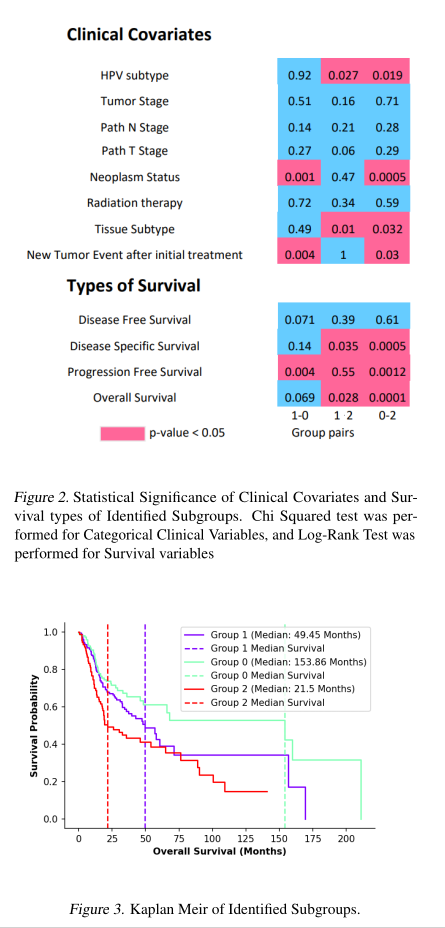
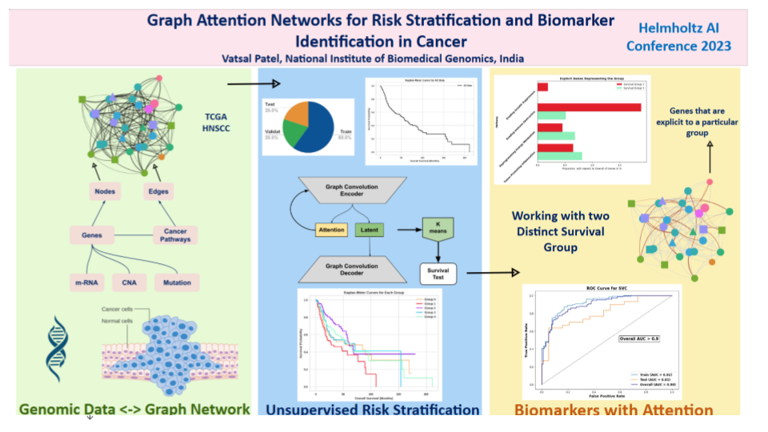
Aug 2024 · Under Journal Review
Immune-Omics Alignment of a Pathology Vision Model
Predicting high-risk HNSCC patients directly from whole-slide images — AUC > 0.85 — by contrastively aligning pathology visual features with immune-omics parameters. Drastically reduces NGS cost and turnaround.
- Contrastive feature alignment of pathology visuals ↔ immune-omics via cosine-similarity loss.
- Attention-based MIL head aggregating tile features per WSI (100k × 80k px).
- Clinical impact: high-risk stratification from an H&E slide alone.
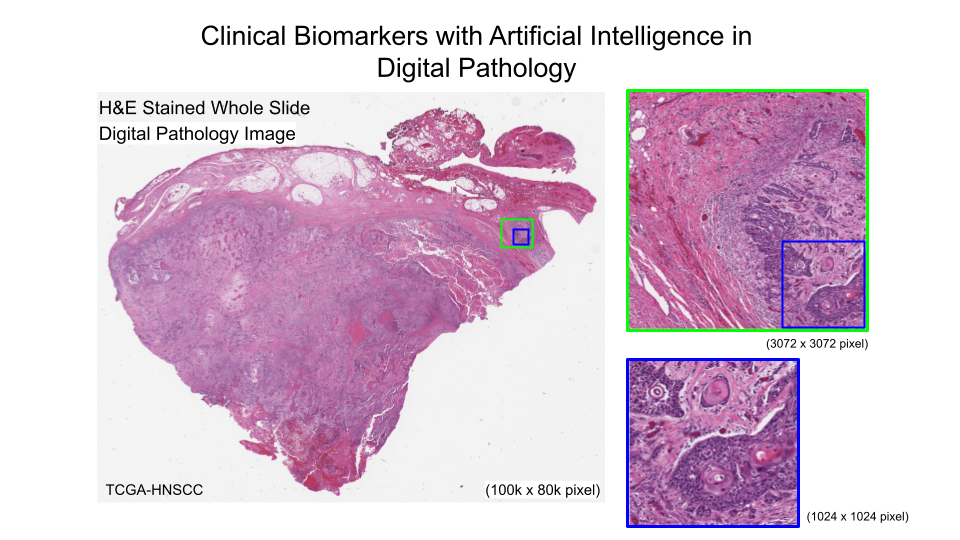
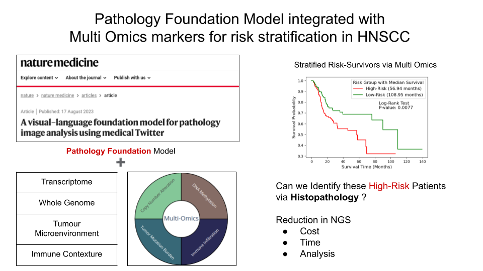
M.Sc. Thesis · Grade 1.0
RAG-LLMs for Metabolomic Biomarker Research
My master's thesis — Retrieval-Augmented Generation with Large Language Models for Metabolomic Biomarker Research — earned the top grade of 1.0 and became a first-author peer-reviewed paper, MedDiscover, published in the Computational and Structural Biotechnology Journal (CSBJ).
MedDiscover: A Domain-Specific RAG Framework for Evidence-Grounded Knowledge Extraction in Metabolomics
Vatsal Pravinbhai Patel, Elena Jolkver, Anne Schwerk · Published 9 April 2026.
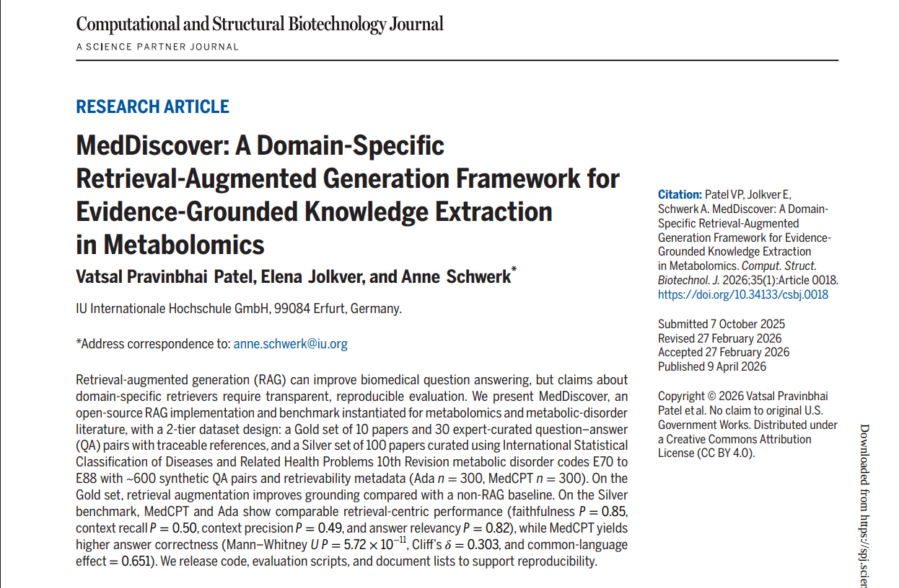
May 2025 — Present · Founder
HawkFranklin Research
Founder & Principal Research Engineer
Building applied AI products in clinical care and genomics — deployed at the World Health Expo (WHX) Dubai, Feb 2026 — while advancing new mathematical structure for multi-omics integration.
PelliScope
AI teledermatology — pre-consultation differential diagnosis, validated at AUC ≈ 0.863. Shown at WHX Dubai with Emirates Health Services.
View project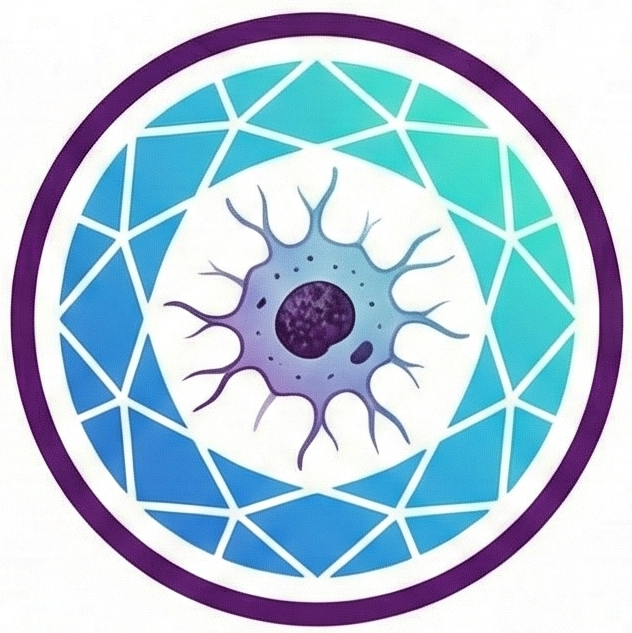
'">OncoGemma
Advanced pathology workstation integrating high-resolution WSI with multimodal AI for cancer subtype prediction & biomarker identification.
View project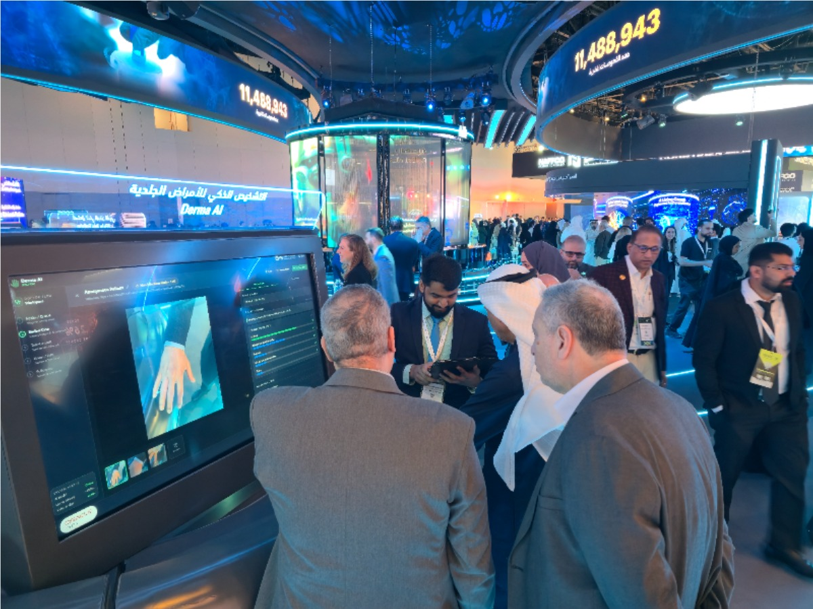
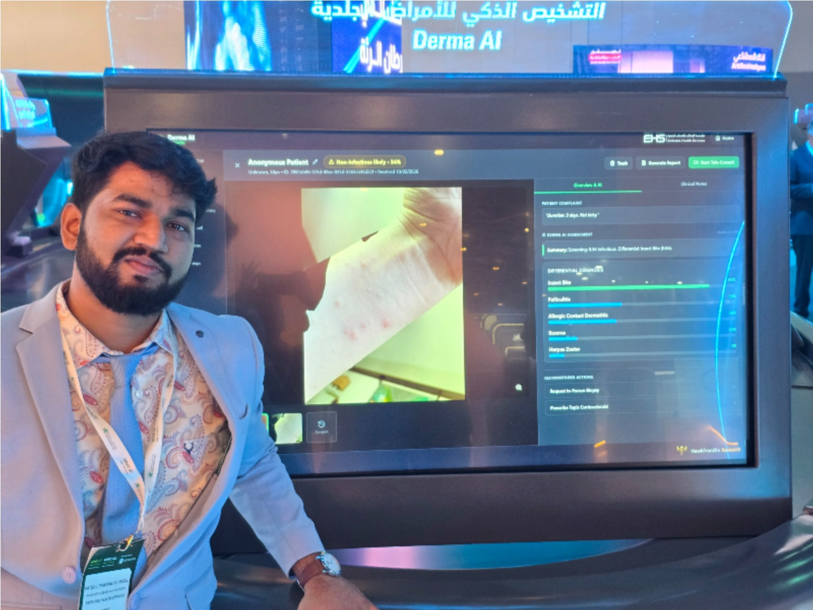
The Record
Publications
MedDiscover: A Domain-Specific RAG Framework for Evidence-Grounded Knowledge Extraction in Metabolomics
10.34133/csbj.0018An ensemble machine learning-based performance evaluation identifies top in-silico pathogenicity prediction methods for cancer driver mutations
10.1186/s13040-024-00420-xMulti-faceted dysregulated immune response for COVID-19 infection explaining clinical heterogeneity
10.1016/j.cyto.2023.156434Deep Learning model to map cancer cells to cancer cell lines and cancer types from single-cell RNA-seq pan-cancer data
Patents
System and Methods for Secondary Multiomic Profile Synthesis
Systems and Methods for an Adaptive AI Agent-Driven Interactive Learning Ecosystem
Peer Reviewer
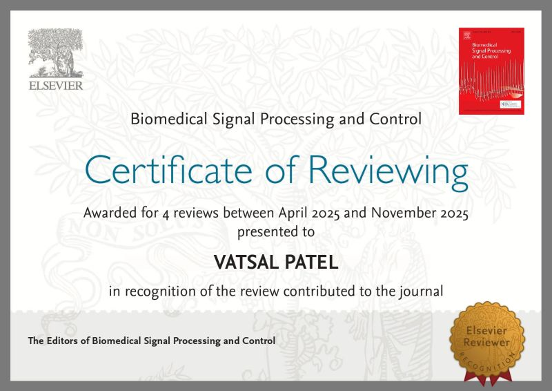
Invited peer reviewer for biomedical & ML research journals.
Technical Toolchain
References
Dr. Anne Schwerk
Professor of AI, IU International University of Applied Sciences, Bad Honnef, Germany
anne.schwerk@iu.orgProf. Meenal Kolkar
Associate Professor, Dept. of Mathematics, St. Xavier's College, Mumbai, India
meenal.kolkar@xaviers.eduLet's build something that matters.
Clinical partners · investors · researchers on the math of biology.